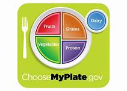

Dating-Marriage

Drew and Becky first met nearly 10 years ago. Facebook was fairly new and there was a dating application that could be used on the site. This application was similar to Tinder before Tinder was a thing. People would look at each other's profile pictures, send winks to each other, and exchage messages. So this is how Becky and Drew were first introduced. They exchanged phone numbers and began texting eachother. Eventually they met up at a local mall, grabbed some sushi and a movie and the rest is history. Drew and Becky dated for two years before getting happily married on November 11, 2010
Running
One of the things that makes Becky unique is her love of running. She will wake up at 4 in the morning to get a run in before heading to work. She states that shoes make all the difference in running. To save your feet from wear and tear you want the right amount of tread. In fact, what is recommended is to change your running shoes out at every 300-500 miles. American Trail Running provides good inspiration and articles on trail running as well as amazing information about shoes for all types of terrain. You can find more information at trailrunner.com.
Nutrition
In addition to being a runner, Becky is a licensed Dietitian. Her motto is “No body is the same, so there is not one specific diet or lifestyle that will work for everyone." This is why the need for someone who is specialized and licensed as a Dietitian is so important. Most Dietitians have a master’s degree in nutrition/dietitics. They consider the current diet, lifestyles, overall health condition and goals of the person they counsel. Dietians are able to cater to the individual’s dietary needs to help the person make important and individualized changes that will lead to a healthier life. As a basic setup to help be healthy the website www.choosemyplate.gov can inspire you to learn more about your meals.
Religion
Becky is also an active member of the Church of Jesus Christ of Latter-Day Saints. She was born and raised in this religion but also has respect of other religions and loves to learn about other religions and cultures. She loves what her church calls the 13 Articles of Faith. These thriteen statements breifly explain part of the fundamental beliefs of her religion. A great referrence of this religion can be found at LDS.org. Here you can learn more about this religion and find meeting locations and times if you would like to visit a worship service in you local area.